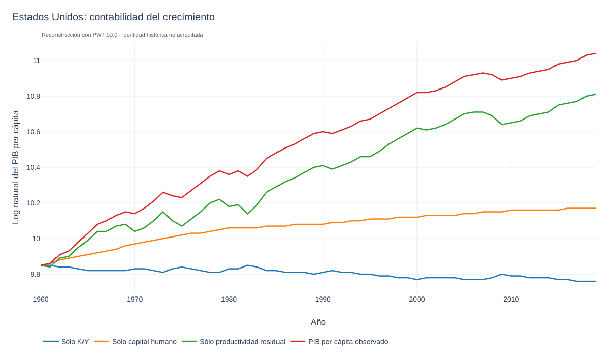
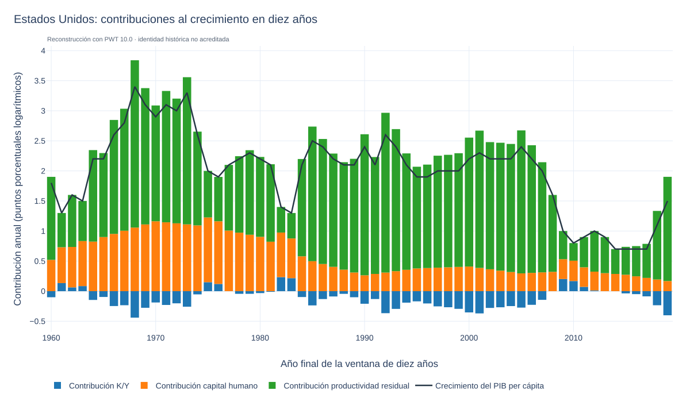
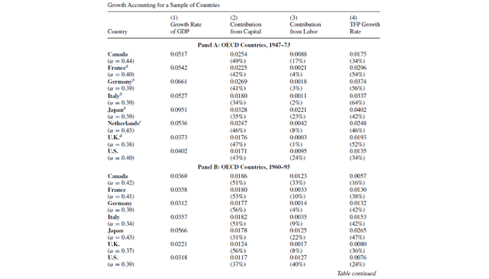
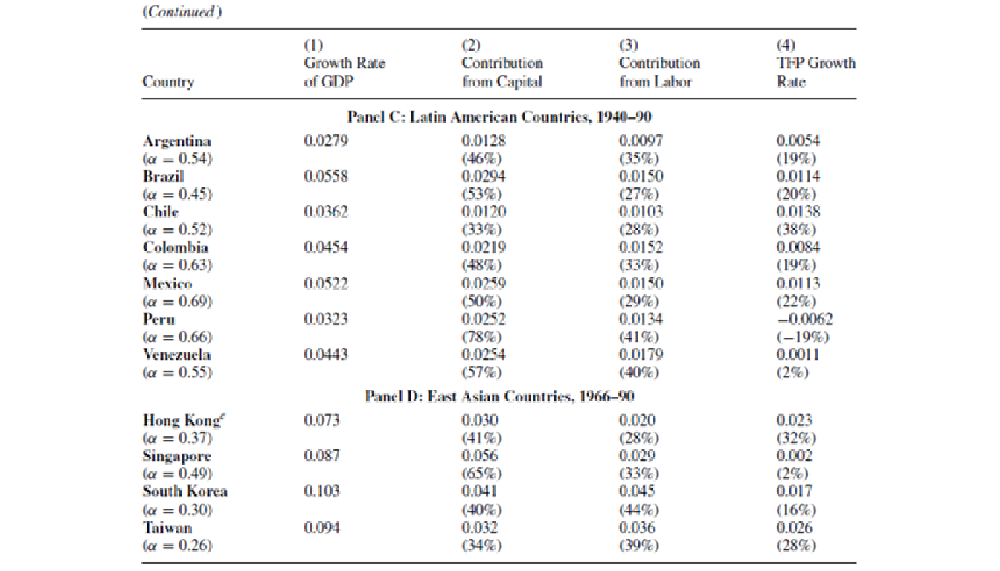
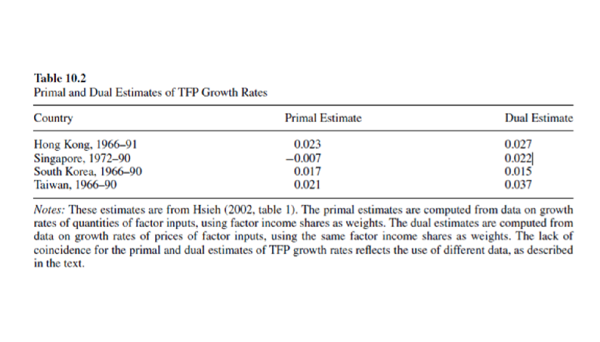
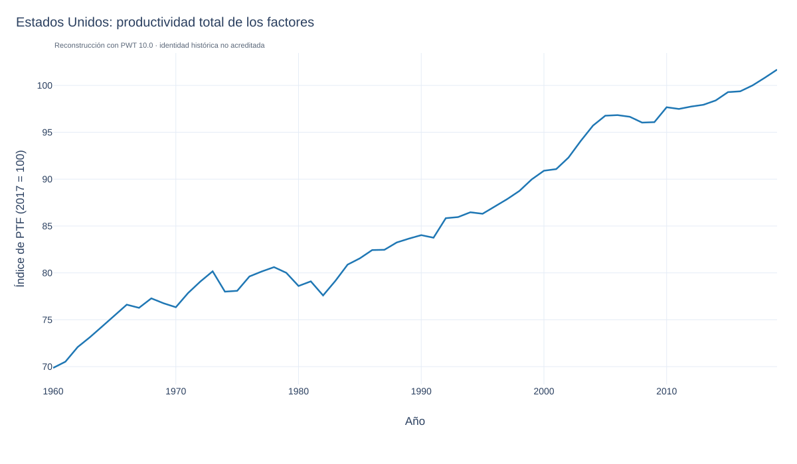
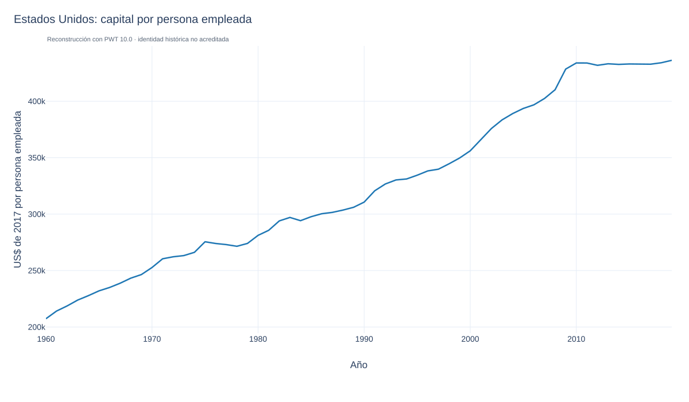
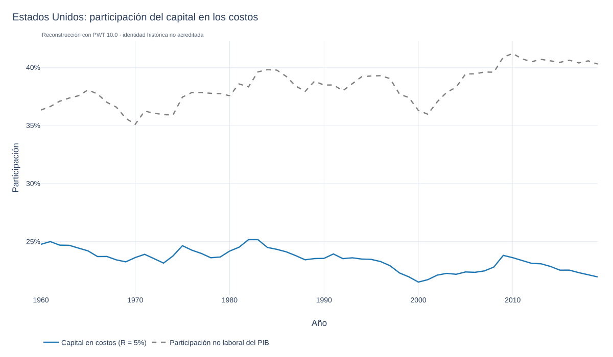
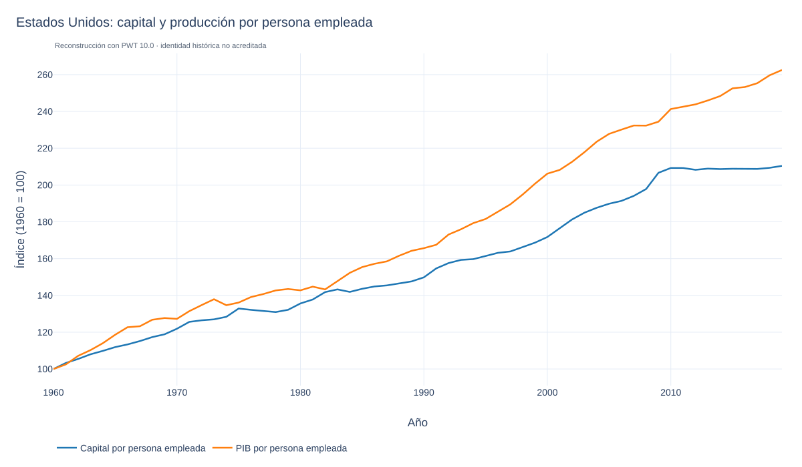
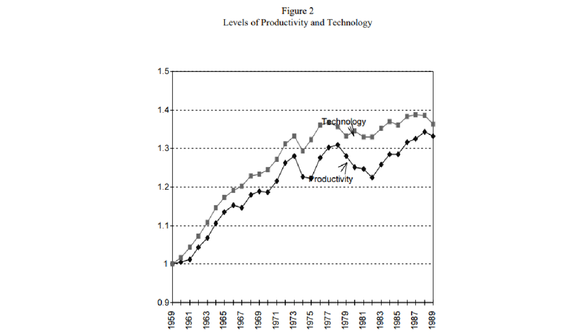

“La contabilidad del crecimiento es una metodología empírica que permite desglosar el crecimiento observado del PIB en componentes asociados con cambios en los factores de la producción.
Dada la imposibilidad de medir el progreso tecnológico directamente, la tasa de crecimiento tecnológica se mide “indirectamente” como la tasa de crecimiento del PIB que no puede explicarse por el crecimiento de los insumos observables, es decir, como “crecimiento residual”.
La contabilidad del crecimiento es un primer paso para el análisis de los determinantes fundamentales del crecimiento económico porque no intenta explicar las fuerzas que impulsan las tasas de crecimiento de cada uno de los insumos o factores.
El paso final involucra las relaciones de las tasas de crecimiento de los factores, las participaciones de los factores y el cambio tecnológico con elementos tales como políticas gubernamentales, preferencias de los hogares, recursos naturales, niveles iniciales de capital físico y humano, etc.
El ejercicio de contabilidad de crecimiento puede ser particularmente útil si los determinantes fundamentales que son importantes para las tasas de crecimiento de los factores son sustancialmente independientes de aquellos que son catalizadores para el cambio tecnológico.
Los conceptos básicos de la contabilidad del crecimiento se presentaron en Solow (1957), Kendrick (1961), Denison (1962) y Jorgenson y Griliches (1967). Griliches (1997) proporciona una visión general de esta historia intelectual, con énfasis en el desarrollo del residuo de Solow”.
Solow (1957): Contabilidad del crecimiento de EEUU en el periodo 1909-1949
Conclusiones:
La relación capital-trabajo crece alrededor del 30 por ciento durante el período (la economía es intensiva en capital).
La tecnología crece alrededor del 80 por ciento. Así, alrededor del 80 por ciento del crecimiento en la producción por unidad de mano de obra durante el período se explica por el crecimiento de la tecnología y los 20 restantes por los aumentos en la relación capital-trabajo.
La medida del nivel de tecnología cae en varios años de recesión y tiende a aumentar en los años de expansión. Por lo tanto, las tasas promedio del crecimiento tecnológico son pro cíclicas.
La función de producción agregada muestra un producto marginal de capital positivo y decreciente.
Sabemos que el crecimiento de la productividad, gA, determina la tasa de crecimiento del BGP. Pero podemos establecer además que el crecimiento de la productividad es responsable de la mayor parte del crecimiento del PIB per cápita a lo largo del tiempo.
El análisis se centrará Estados Unidos, pero para varios países desarrollados se obtendrían resultados similares.
Para hacer esto, vamos a construir algunas sendas hipotéticas para el logaritmo del PIB per cápita:
\[\ln y_t = \frac{\alpha}{1-\alpha} (\ln K_t/Y_t) + \ln h_t + \ln A_t.\]
\[\ln y_t^{KY} = \frac{\alpha}{1-\alpha} (\ln K_t/Y_t) + \ln h_{1960} + \ln A_{1960}\]
Esto nos dice qué logaritmo del PIB per cápita habría sido en un mundo hipotético donde lo único que cambió con el tiempo fue la relación capital / producto, pero donde la productividad se mantuvo exactamente en sus niveles de 1960 todo el tiempo.
Si esto resultara estar muy cerca del PIB per cápita real, entonces sabríamos que el capital / producción es el principal responsable del crecimiento real del PIB per cápita, y que la productividad no es importante.
Podemos hacer lo mismo para el capital humano y la productividad:
\[\ln y_t^{HC} = \frac{\alpha}{1-\alpha} (\ln K_{1960}/Y_{1960}) + \ln h_{t} + \ln A_{1960}\]
y
\[\ln y_t^{Prod} = \frac{\alpha}{1-\alpha} (\ln K_{1960}/Y_{1960}) + \ln h_{1960} + \ln A_{t}.\]

Comparaciones por década
Esta es solo una forma ligeramente diferente de mostrar la misma información de la figura anterior.
Para cualquier año dado, vamos a tomar una tasa de crecimiento anualizada de diez años de todos los factores que determinan el crecimiento. Por ejemplo, examinaremos \((\ln A_{2000} - \ln A_{1990})/10\) para ver la tasa de crecimiento de la productividad de 1990 a 2000.
Esto nos da una forma de contabilizar el crecimiento del PIB per cápita durante cualquier período de 10 años.
\[(\ln y_t - \ln y_{t-10})/10 = \frac{\alpha}{1-\alpha} (\ln K_t/Y_t - \ln K_{t-10}/Y_{t-10})/10 + (\ln h_t - \ln h_{t-10})/10 + (\ln A_t - \ln A_{t-10})/10.\]
Esto descompone la tasa de crecimiento anualizada de 10 años del PIB per cápita en contribuciones de la relación capital/producto, el capital humano y el residual de productividad.




Resultados consistentes con Krugman (1994): El mito del milagro asiático
Predicción:
El artículo fue escrito para Foreign Affairs en 1994:



La reconstrucción distingue la participación del capital en costos de su participación en el PIB:
El capital por persona empleada aumenta 2.10 veces entre 1960 y 2019, aunque disminuye en nueve años. No corresponde afirmar g_k<0 para todo el periodo.
Como ejercicio condicional, una menor contribución del capital implica un mayor residual de productividad si se mantienen fijos el crecimiento observado y las demás contribuciones. La interpretación exige especificar el periodo y la descomposición; no identifica por sí sola un cambio tecnológico.

“Underestimating the Real Growth of GDP, Personal Income, and Productivity” (Feldstein, 2017):
Feldstein aborda la posible desaceleración de Estados Unidos desde la perspectiva de la medición de la productividad.
El cambio tecnológico hace que cada vez sea más difícil integrar lo siguiente en la medición de la producción y en los cambios en los índices de precios:
Medir todos los bienes y servicios relevantes para la economía (antes todo se concentraba en la manufactura; la variedad de sectores productivos es cada vez más amplia).
Medir cambios en calidad a través del tiempo (smartphones que combinan características que antes se encontraban en diferentes productos: internet, teléfonos móviles, GPS).
Integrar nuevos productos, en especial servicios (Facebook, Google).
La consecuencia es que estamos subvalorando el nivel de la producción a partir de la introducción de estas tecnologías.
“Aggregate productivity and aggregate technology” (Basu, Fernald; EER; 2002):
La productividad agregada y la tecnología agregada son conceptos significativos pero distintos.
BF muestran que el residuo de Solow ligeramente modificado mide los cambios en el ingreso, incluso cuando la productividad y la tecnología difieren debido a distorsiones como la competencia imperfecta.
Presentan un marco general que identifica varias brechas no tecnológicas nuevas entre productividad y tecnología, brechas que reflejan imperfecciones y fricciones en los mercados de productos y factores.
Empíricamente, estas brechas son importantes. En comparación con el crecimiento de la productividad, los choques tecnológicos medidos están significativamente poco relacionados con la producción y, en esencia, no están correlacionados con los factores.
“Aggregate productivity and aggregate technology” (Basu, Fernald; EER; 2002):
